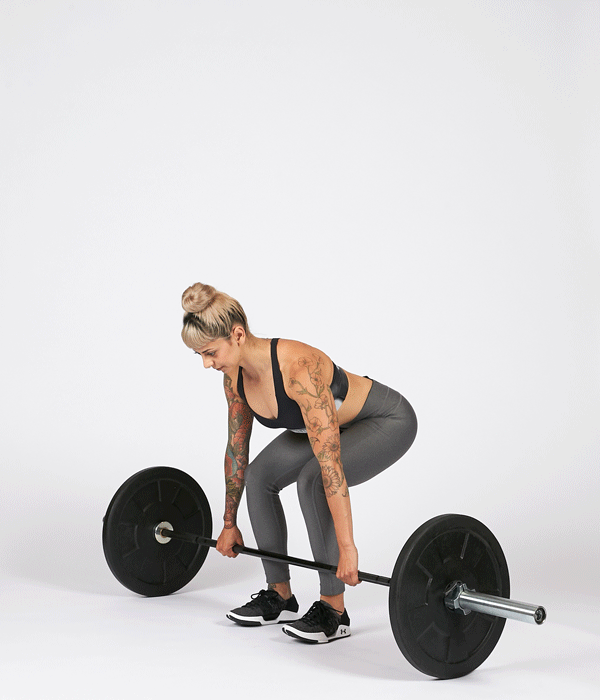
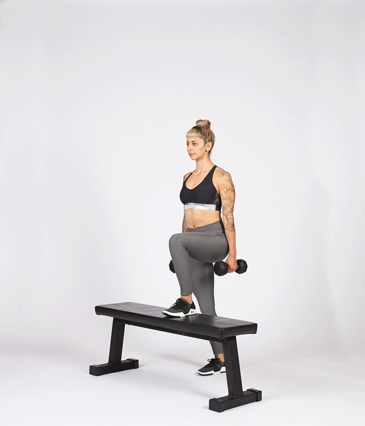
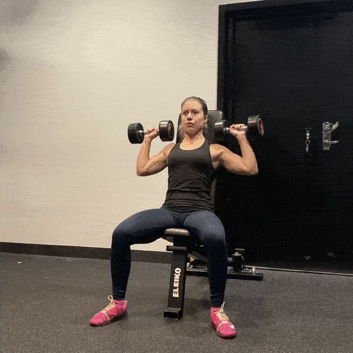
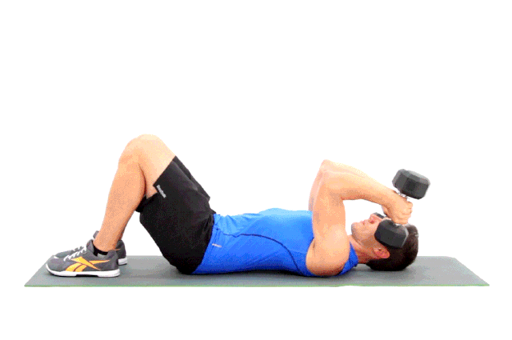

| EJERCICIOS | COMO SE HACE | VISUALIZACION |
|---|---|---|
| Deadlift | Coloca una barra sin pesos en el suelo y ponte con los pies separados a lo ancho de tus caderas. Agarra la barra con las manos más separadas que tus pies mientras te inclinas de tal forma que tu espalda queda recta. Levántate con la barra y párate con los hombros hacia atrás y los brazos estirados hacia abajo manteniendo la barra pegada al cuerpo. Vuelve a bajar haciendo una sentadilla y dejando la espalda en todo momento recta. |
 |
| Step ups | Empieza con tu pierna más débil sobre un cajón y sube con las mancuernas en las manos. Sin pararte, vuelve a la posición de inicio y repite el ejercicio. |
 |
| Press de hombros sentado | Siéntate erguida en un banco y, sujetando las mancuernas sobre la cabeza, flexiona los codos y baja las mancuernas hasta que queden alineadas con los hombros. |
 |
| Hip Thrust | Siéntate en el suelo, apoya la espalda en un banco y pon la barra encima de tus caderas. Con las rodillas dobladas, levanta las caderas del suelo hasta que la espalda quede paralela. Baja lentamente las caderas y repite el ejercicio. |

|
| Extensión de tríceps | Acuéstate boca arriba en un banco con mancuernas en las manos y los brazos extendidos hacia arriba. Manteniendo los hombros quietos, flexiona los codos hasta bajar las mancuernas a la altura de las orejas. |
 |